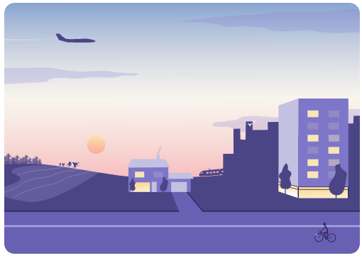

<!DOCTYPE html>
<html lang="en">
<head>
	<meta charset="utf-8">
	<meta name="viewport" content="width=device-width, initial-scale=1">
	
	<title>Interactive Landscape</title>
	
	<!-- <link rel="shortcut icon" type="image/x-icon" href="docs/images/favicon.ico" /> -->

    <link rel="stylesheet" href="scripts/leaflet/leaflet.css" crossorigin=""/>
    <script src="scripts/leaflet/leaflet.js" integrity="sha512-BB3hKbKWOc9Ez/TAwyWxNXeoV9c1v6FIeYiBieIWkpLjauysF18NzgR1MBNBXf8/KABdlkX68nAhlwcDFLGPCQ==" crossorigin=""></script>

	<style>
		html, body {
			height: 100%;
			margin: 0;
			display: flex;
			justify-content: center;
			align-items: center;
		}
		.leaflet-container {
			height: 400px;
			width: 600px;
			max-width: 100%;
			max-height: 100%;
			background-color: #888888;
		}
	</style>

	
</head>
<body>


<div id="myMap" style="width: 996px; height: 664px;"></div>
<script>
// Variables
var mapSW = [0,4096],
mapNE =[4096,0];

// Declare Map Object
var map = L.map('myMap').setView([0,0],1.5);


// Reference the tiles
L.tileLayer('maps/landscape/{z}/{x}/{y}.png',{
	minZoom:1,
	maxZoom:4,
	continuousWorld:false,
	noWrap:true,
	crs:L.CRS.Simple,
}).addTo(map);

// Set max display according px coordinates
map.setMaxBounds(new L.LatLngBounds(
	map.unproject(mapSW,map.getMaxZoom()),
	map.unproject(mapNE,map.getMaxZoom()),

	))

// Icons

var light_bulb_icon = L.icon({
    iconUrl: 'images/light-bulb_icon_small.png',
    iconSize: [75, 75],
    iconAnchor: [22, 94],
    popupAnchor: [-3, -76],
    shadowUrl: 'images/light-bulb_icon_shadow.png',
   shadowSize: [68, 95],
  shadowAnchor: [29, 65]
});
var stockage_icon = L.icon({
    iconUrl: 'images/stockage_icon.png',
    iconSize: [75, 75],
    iconAnchor: [22, 94],
    popupAnchor: [-3, -76],
   shadowUrl: 'images/stockage_icon_shadow.png',
   shadowSize: [68, 95],
    shadowAnchor: [32, 44]
});


// Markers and Popups
//LatLng
var refmarker = L.marker([0,0],{
	draggable:true,
})
.addTo(map)
.bindPopup('<b>Move me to get coordinates</b>').openPopup();
	
refmarker.on('dragend', function(ev) {
	// ev is an event object (MouseEvent in this case)
	refmarker.getPopup()
	.setContent(refmarker.getLatLng().toString()+'<br/>Pixels '+map.project(refmarker.getLatLng(),map.getMaxZoom().toString()))
	.openOn(map)
; 
});
// Pixels
var marker_maison_1 = L
.marker(map.unproject([2380, 2956],map.getMaxZoom()),{icon: light_bulb_icon})
.bindPopup('<b>point du réseau electrique</b></br> <a href="https://nosgestesclimat.fr/" target="_blank">Tester mon empreinte sur le climat </a>')
//.addTo(map)

var marker_maison_2 = L.marker(map.unproject([1140, 2088],map.getMaxZoom()),{icon: light_bulb_icon}).bindPopup('<b>point du réseau electrique</b></br> <a href="https://nosgestesclimat.fr/" target="_blank">Tester mon empreinte sur le climat </a>')
//.addTo(map)

var marker_maison_3 = L.marker(map.unproject([1000, 2776],map.getMaxZoom()),{icon: light_bulb_icon}).bindPopup('<b>point du réseau electrique</b></br> <a href="https://nosgestesclimat.fr/" target="_blank">Tester mon empreinte sur le climat </a>')
//.addTo(map)
var marker_stockage_1 = L.marker(map.unproject([1472, 2356],map.getMaxZoom()),{icon: stockage_icon}).bindPopup('<b>Zone de stockage<b/>')
//.addTo(map)
	
var marker_stockage_2 = L.marker(map.unproject([3372, 2128],map.getMaxZoom()),{icon: stockage_icon}).bindPopup('<b>Zone de stockage<b/>')
//.addTo(map)

var marker_stockage_3 = L.marker(map.unproject([2180, 3232],map.getMaxZoom()),{icon: stockage_icon}).bindPopup('<b>Zone de stockage<b/>')
//.addTo(map)


// Layer Group
//addTo(map) is no longer added individually to each marker_ampoule. instead we create a layerGroup including an array of desired markers 
var lg_maisons=L.layerGroup([marker_maison_1,marker_maison_2,marker_maison_3]).addTo(map)

var lg_stockage=L.layerGroup([marker_stockage_1,marker_stockage_2,marker_stockage_3]).addTo(map)

var overlays={
	"Réseau éléctrique":lg_maisons,
	"Réseau stockage":lg_stockage,
}

// Add Layer Control
// addTo(map) is added here, on L.control.layers
L.control.layers(null, overlays).addTo(map)


</script>


</body>
</html>
